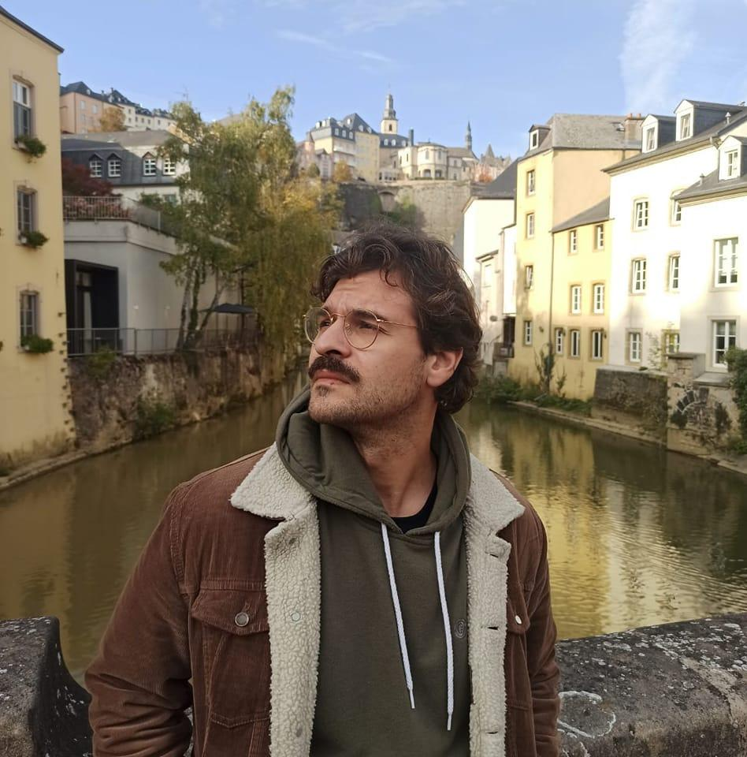
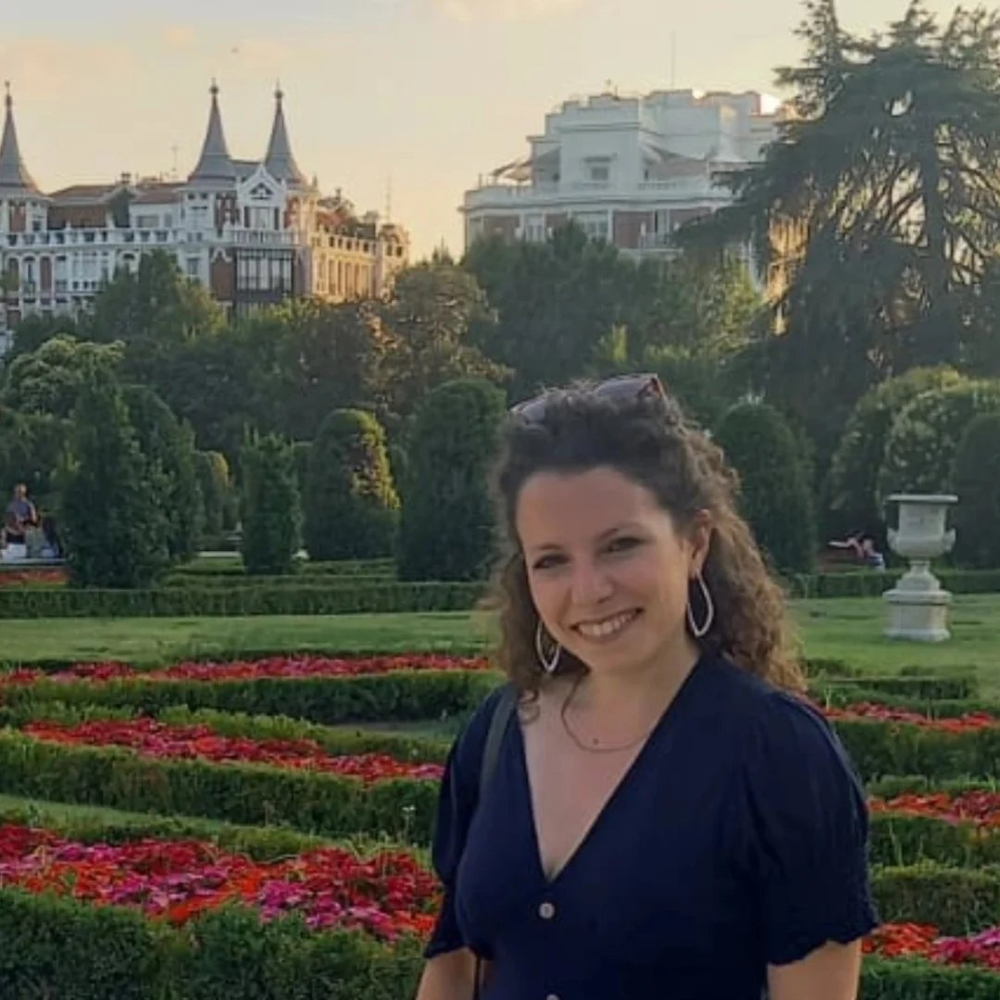
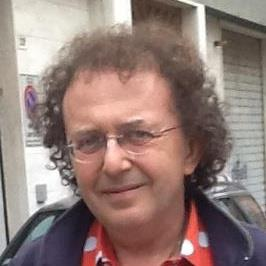
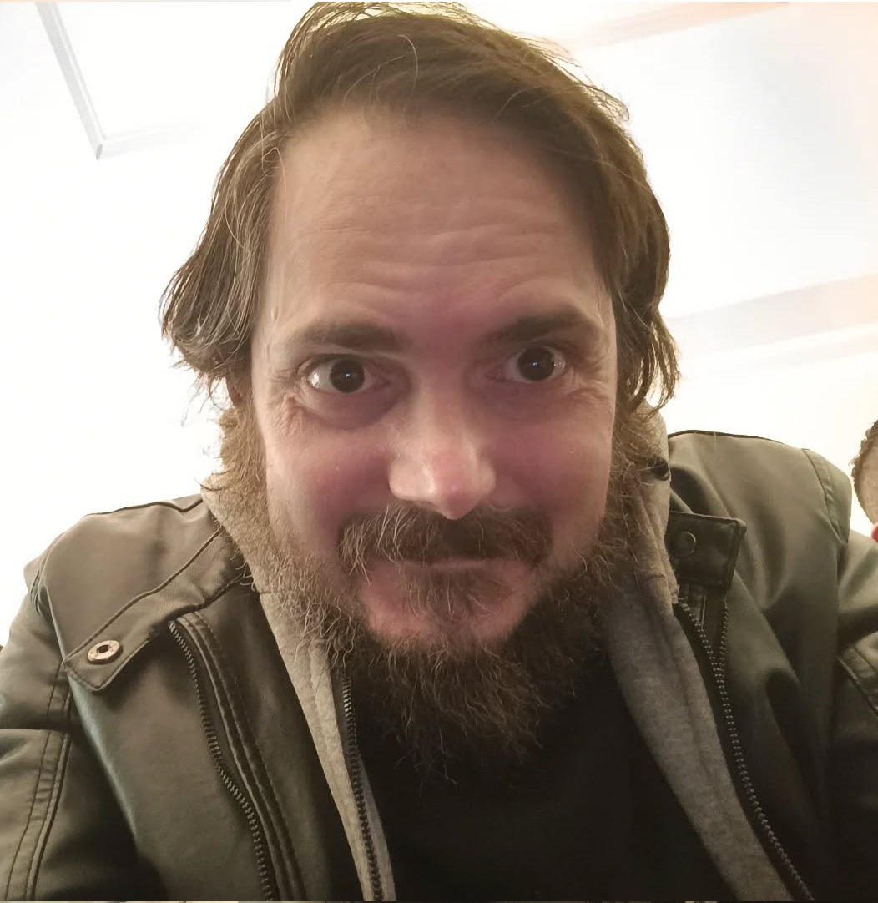
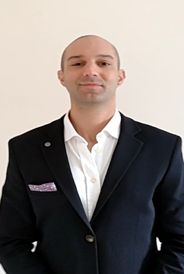
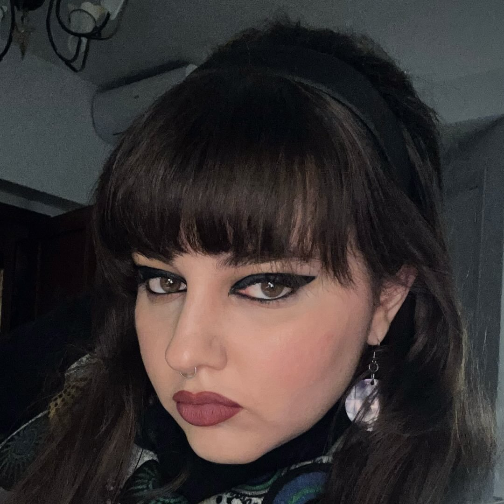
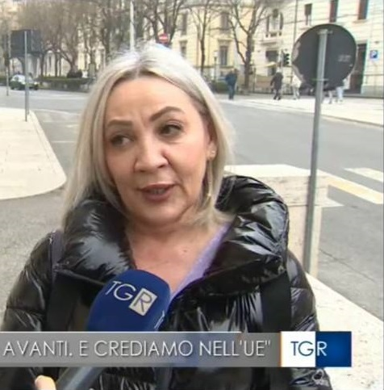
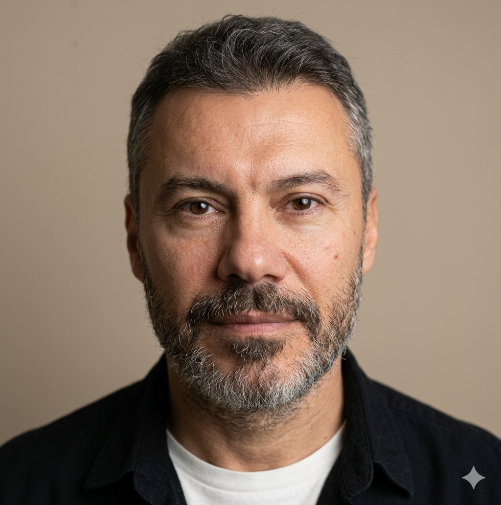
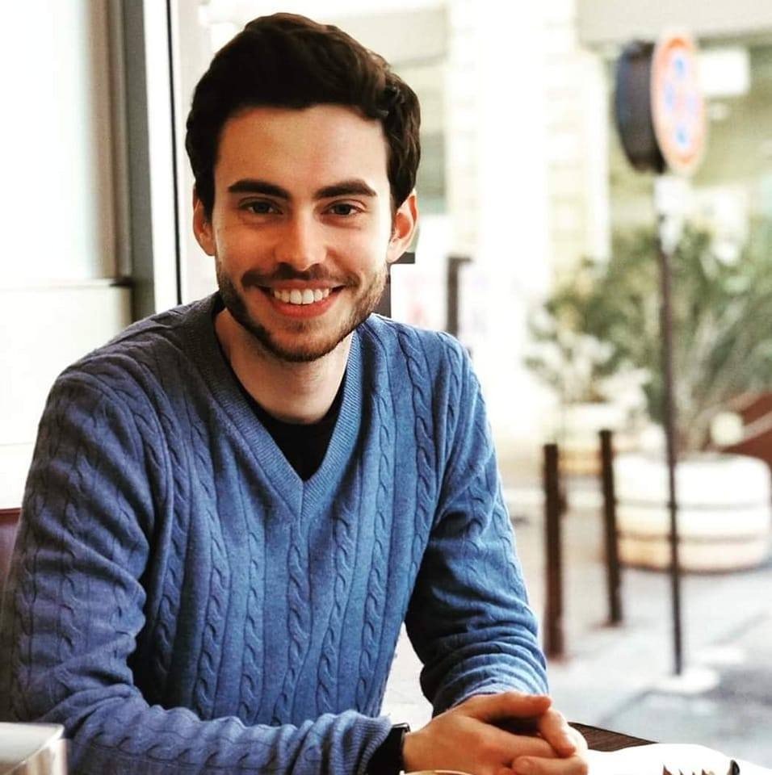

Roberto Palumbo
Guida l'associazione e ne rappresenta i valori. Coordina con la segretaria le attività e promuove le relazioni istituzionali sul territorio marchigiano.
Aurora è un'associazione culturale e aggregatore politico ad Ancona e nelle Marche che riunisce persone e movimenti su tematiche sociali condivise — democratica, laica, federalista e radicalmente impegnata per le Marche e l'Europa.
Aurora per le Marche nasce dall'idea di costruire uno spazio culturale e politico aperto ad Ancona e in tutta la regione, capace di aggregare sensibilità diverse attorno a valori condivisi: la nonviolenza, la democrazia, la laicità e il federalismo europeo.
Non siamo un partito, ma un aggregatore: un luogo di incontro e confronto tra persone, movimenti e forze politiche che condividono la visione di una società più libera, giusta e sostenibile — radicata nel territorio delle Marche e aperta all'Europa.
Crediamo nel valore del dialogo civile, nella forza della cultura come strumento di cambiamento, e nell'importanza di affrontare le grandi questioni del nostro tempo — dall'ecologia alla giustizia sociale — con rigore, passione e spirito riformatore.
"Aurora nasce dall'incontro tra Simone ed Emanuele nel 2024, dalla convinzione che il cambiamento culturale e politico nelle Marche debba partire dal basso, dalla società civile, dai cittadini."
Le persone che animano Aurora ogni giorno, garantendo direzione, organizzazione e continuità all'associazione.

Guida l'associazione e ne rappresenta i valori. Coordina con la segretaria le attività e promuove le relazioni istituzionali sul territorio marchigiano.

Gestisce l'organizzazione, le comunicazioni ufficiali e coordina il lavoro quotidiano dell'associazione.

Figura di riferimento e garanzia istituzionale dell'associazione. Offre guida e continuità con la visione fondativa di Aurora.

Fondatore e responsabile della gestione economica dell'associazione, garantendo trasparenza e sostenibilità.





Dibattiti, commemorazioni, incontri pubblici: Aurora agisce sul territorio marchigiano per costruire cultura civica e partecipazione attiva ad Ancona e nelle Marche.
L'evento di Ancona ha analizzato la proposta di legge per abolire la "tassa etica", un'addizionale del 25% su IRPEF e IRES per il settore pornografico lecito. Il dibattito ha evidenziato come questa imposta sia discriminatoria: non colpisce in base alla capacità contributiva, ma applica un pregiudizio morale a un'attività lavorativa regolare.
✍️ Firma il referendumUn momento di riflessione collettiva e memoria civile per non dimenticare il dramma del conflitto in Ucraina. Aurora co-organizza con l'associazione europea italia-ucraina Maidan della regione Marche una cerimonia pubblica per la solidarietà e la difesa dei diritti umani.
Aurora ha partecipato all'evento "Ma quale casa ?" e mantiene attivo un gruppo di confronto e studio sulla materia come obiettivo di associazione per il 2026
Aurora si impegna per affrontare le problematiche strutturali delle strutture e del personale mantenendo questo tema come obiettivo di associazione per il 2026
Domenica 25 gennaio al Piazzale del Passetto di Ancona per accendere una luce contro la repressione in Iran. Insieme alla comunità iraniana, AURORA per le Marche e Associazione TerzaVia Odv organizzano questa manifestazione
Aurora si è espressa pubblicamente contro un incontro tenuto al Liceo Leopardi di Recanati, organizzato da una testata accusata di diffondere contenuti filorussi. Il Presidente Roberto Palumbo e la segretaria Martina Bonci hanno chiesto chiarezza sulla vicenda, a fianco dell'europarlamentare Federica Onori e di Azione Macerata.
🗞️ Leggi l'articoloOgni settimana ospitiamo sul nostro canale YouTube esperti, attivisti e figure politiche per affrontare in diretta i temi che contano: dalla politica locale alle grandi questioni nazionali ed europee. Un confronto aperto, libero e senza filtri.
Tesserarsi ad Aurora per le Marche significa far parte di una comunità attiva, democratica e radicata nel territorio. Non è solo un gesto formale: è una scelta di partecipazione civile.
Compilando il modulo entri ufficialmente nell'associazione e puoi prendere parte alle nostre iniziative, agli eventi, ai gruppi di studio e alle assemblee.
Ehii: sappiamo che tesserarsi è un passo importante (quasi come un primo appuntamento!). Se prima di iscriverti vuoi capire chi siamo e se siamo davvero così simpatici, ti diamo la possibilità di conoscerci.
Entra nella nostra community WhatsApp: è lo spazio informale dove puoi parlare direttamente con l'organizzazione, farci domande e conoscerci meglio!
Per completare il tesseramento, compila il modulo ufficiale cliccando il tasto qui sotto.
Apri il modulo di iscrizioneCondividi i nostri valori? Vuoi partecipare, collaborare o semplicemente saperne di più? Scrivici ed unisciti alla community WhatsApp gratuita: scopri il mondo Aurora e confrontati con noi.